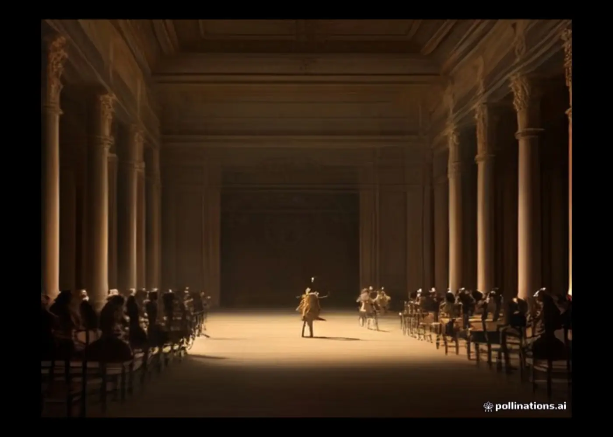

卷十九 · 洗脚认疤
夜深人静，珀涅罗珀与"乞丐"长谈。她讲起自己的苦：当年织寿衣骗求婚者三年，夜夜拆掉；如今计穷，弓比试在即，无可再拖。又讲起当年送别丈夫的一幕——他握着她的手说：若我回不来，让忒勒马科斯长大便好；若我归来……那句话像刀子，二十年割着她的心。
夜深人静，珀涅罗珀与"乞丐"长谈。她讲起自己的苦：当年织寿衣骗求婚者三年，夜夜拆掉；如今计穷，弓比试在即，无可再拖。又讲起当年送别丈夫的一幕——他握着她的手说：若我回不来，让忒勒马科斯长大便好；若我归来……那句话像刀子，二十年割着她的心。
这一夜，全伊萨卡无人安睡。奥德修斯在院中辗转，亲见女仆们窃笑私通求婚者，怒火中烧；忒勒马科斯从城外赶回，父子各自装作不识；雷声在无云的晴空炸响——宙斯的暗号。珀涅罗珀在楼上哭到力竭，梦见丈夫就在身边。心乱如麻的王后向猎神祷告，乞求当夜给她一个征兆；纺锤脱手的一瞬，晴空再度惊雷——她知道：神应了。

奥德修斯褪下破衣，纵身跃上门槛，把一壶箭倒在脚边，高声宣布："算不清旧账了！现在开始算新账——为我这二十年的耻辱！"话音未落，一箭正中安提诺俄斯的咽喉——他正举杯狂饮，酒杯翻倒，血从杯口涌出。满殿死寂：他们以为这一箭失手射错了人，直到老人亮出真名："你们豺狼，当我永远回不来了！现在，死路一条！"
殿内火光重燃。珀涅罗珀下楼，在火边坐下，久久打量那个陌生男人——既不敢认，也不敢问。忒勒马科斯急了：母亲，我这颗心比石头还硬吗？二十年，坐在这里不哭不问！她答："我有我的道理。"她只吩咐：为客人备床——搬到寝殿门外那张婚床上去。
冥府里，阿喀琉斯的亡魂迎着阿伽门农的亡魂而来。两位旧主互诉身后事：一个惊叹阿喀琉斯葬礼的盛大与儿子的荣光，一个细说归乡被弑的冤屈。随后亡魂们望见奥德修斯归家的消息，阿喀琉斯叹道：奥德修斯啊，你还是靠你的贤妻得了善终——愿你回家后一切安好。
两部史诗庄严开篇，都唤着一个名字："女神啊，请歌唱珀琉斯之子阿喀琉斯的愤怒"——歌唱者悬请缪斯，而缪斯的代言人，传统上叫荷马。可这位奠定了整个西方文学起点的人物，我们几乎一无所知：他是谁？生活在什么时候？真的存在过吗？
两千年来，特洛伊被视为传说。直到十九世纪，一个相信荷马的德国商人真的挖出了一座城。
《伊利亚特》一万五千多行，《奥德赛》一万两千多行——在没有文字的时代，这样的篇幅如何流传？答案是：不靠背诵，靠"生成"。
《伊利亚特》的第一个词是"愤怒"（μῆνις）。整部一万五千行的史诗，从愤怒开始，到愤怒平息结束。读懂这个愤怒，就读懂了这部诗。
读荷马的人常有一个疑问：神怎么到处插手？打斗要请神助阵，选边要靠掷签，连人心的动摇都归给一位下凡的女神。这算不算是"迷信"？
英雄们为什么打十年仗不回家？答案藏在两个希腊词里：克罗斯（kleos）与提墨（timē）。
《奥德赛》里，一个陌生人可以走进陌生人的家门，吃住三日，临行获赠重礼，而主人分文不取。这不是奇风异俗，而是一整套神圣制度：客谊（xenia）。
如果说《伊利亚特》是一部"力量"的史诗，《奥德赛》就是一部"智谋"的史诗。它的第一行就给主角定了性：那个"辗转多谋"（polytropos）的人——走过许多城邦、见过许多人心、拐过无数弯路的人。
荷马史诗是男人的战场，但撑起两部长诗骨架的，是一群女性：女神、王后、公主、女俘、老乳母。读她们，能读出史诗最柔软也最锋利的一面。
《伊利亚特》第十八卷，战事正酣，诗人却按下了暂停键，用了约一百三十行，描写神匠赫菲斯托斯为阿喀琉斯锻造新盾。这段"盾之描写"是西方文学最早的器物诗，也是全诗的隐藏核心。
荷马是西方第一位"小说家"——尽管他写的是诗。两部史诗的叙事技巧，至今仍是写作课的范本。
荷马之后，几乎没有一位西方作家能绕开他。读懂他的接受史，等于拿到了半部西方文学史的地图。
《伊利亚特》出场人物逾百，以下按阵营整理最要紧的名字。初读记不住不必勉强——读到再查即可。
《奥德赛》的人物围绕"一条等待的线"展开：海上漂泊的奥德修斯、海上寻子的忒勒马科斯、宫中织布的珀涅罗珀，以及一屋子等死的求婚者。
荷马笔下的神明不是道德偶像，而是有情有欲、爱恨分明的"大人物"。以下按立场与戏份整理。
荷马的地理横跨爱琴海两岸：一边是战场与王城，一边是归途上的妖岛险峡。
史诗里的器物往往自带剧情。认识它们，等于握住了一串情节的钥匙。
读懂史诗的几个关键词。它们不是生僻的学术黑话，而是英雄世界运转的齿轮。
从青铜时代的战火，到今天的课堂——史诗走过的三千年。
以下引文均为白话转述（不是译本原文），标注原诗出处，供对照原译时按图索骥。
荷马的两部史诗并非特洛伊战争的"全集"。古代其实有一整套同题材史诗，合称"史诗循环"（Epic Cycle），把战争从起因写到诸英雄的最终归宿。可惜除《伊利亚特》《奥德赛》外，其余六部全部失传，只在一部古代解题书里留下了梗概。本辑以白话复原这六部——从《塞普利亚》开始。
《伊利亚特》在赫克托耳的葬礼中收束，但阿喀琉斯还活着。《埃塞俄比斯》接续其后，讲完第一勇士的最后五天——这也是整场战争里最富异域色彩的一卷：两位"外来的救星"先后驰援特洛伊，都倒在阿喀琉斯矛下，而阿喀琉斯自己也随之谢幕。
阿喀琉斯既死，特洛伊的城墙仍在。《小伊利亚特》讲的是破城前最后的筹备：一具预言家的脑子、一副无坚不摧的弓、一匹巨大的马。
十年打不破的城，一夜陷落。《伊利乌斯的陷落》是循环史诗里最黑暗的一部：不是英雄对决，而是屠城实录。